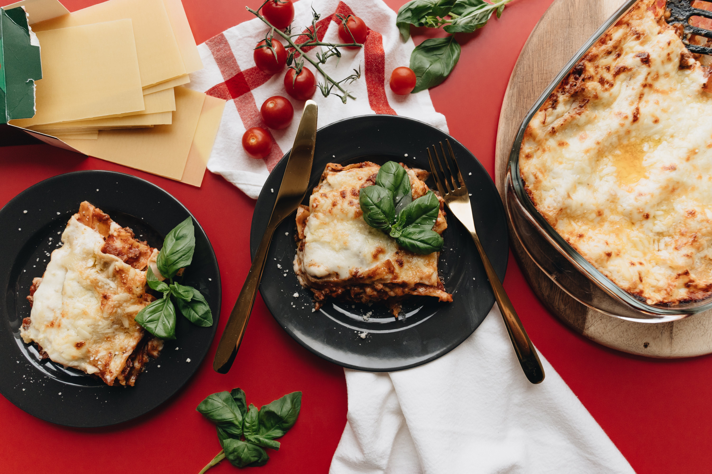

Lasagna

Christmas Breakfast
Make the Best Cheesy Lasagna by Blackfoot Sanji
Ingredients
- Meat
- Onion
- Tomatoes
- Fresh Herbs
- Sugar
- Spices and Seasonings
- Noodles
- Cheese
- Eggs
Steps
-
Cook the meat:
Cook the ground meat in a skillet until browned and crumbly.
Add the onion and continue cooking until it's translucent.
Stir in the canned tomato products, half of the parsley,
garlic, basil, 1.5 teaspoons of salt, oregano, and sugar.
-
Cook the noodles:
Boil the lasagna noodles in lightly salted
water until they're al dente.
-
Make the cheese layer:
Mix cottage cheese, Parmesan cheese, eggs,
the remaining parsley, the remaining salt, and pepper in a bowl.
-
Assemble the lasagna:
Layer the ingredients according to the recipe
(starting with sauce and ending with mozzarella)
until the lasagna is assembled.
-
Bake the lasagna:
Cover with foil and bake in the preheated oven
for about half an hour. Remove the foil and continue
baking until the top is golden brown.